diatas adalah contoh penerapan pengguaan Display Flex
. dan display flex mempunyai fitur yang bernama flex-decoration
1. row
2. row-reverse
3. column
4. column-reverse
Berikut Adalah Contoh Masing-Masing Kegunaannya :
#Row
Row di mula dari kiri ke kanan
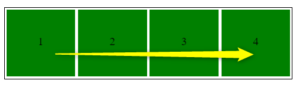#Row-Reverse
Row di mula dari kanan ke kiri
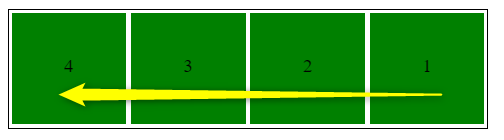#Column
Column di mula dari Atas ke bawah
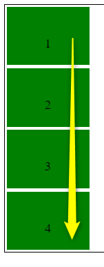#Column-Reverse
Column di mula dari bawah ke Atas
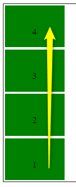Flex wrap adalah kondisi di mana jika item
baru di tambahkan item itu tidak memaksakan umtuk muat di
dalam container.
Keterangan :
Sifat Flex adalah Mengusahakan/memaksa selalu
muat (kesamping) pada kontainernya
coba kalian lihat kotak item yang awalnya 4 sekarang ditambah kan 2 item Menjadi 6. maka hasilnya seperti di atas
#Flex-Wrap
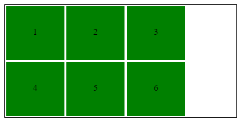#Flex-Wrap Reverse
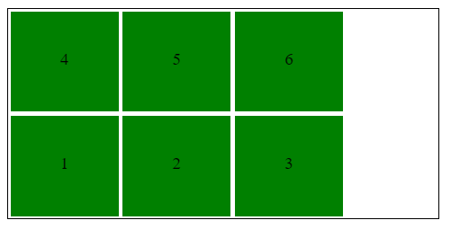Justify-Content Memiliki 6 effek yang bisa di pakai
Flex-start berperilaku sebagai default bisa di lihat seperti gambar di bawah ini
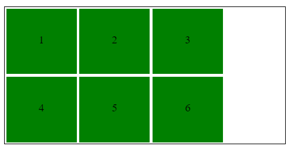Flex-end berperilaku sebagai kebalikan Flex-Start yaitu munculnya di Akhir
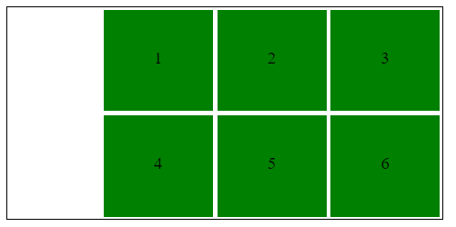Center berperilaku Menegahkan semua Item
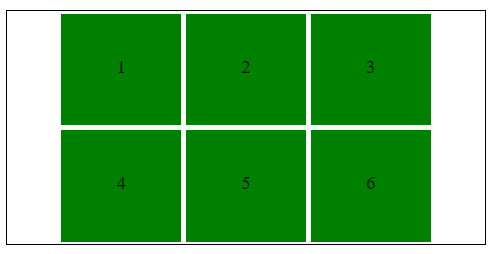Space-between adalah gabung dari beberapa effect di atas. berperilaku : item pojok kanan dan kiri akan memojok ke strart dan end sedang yang tengan berada di center
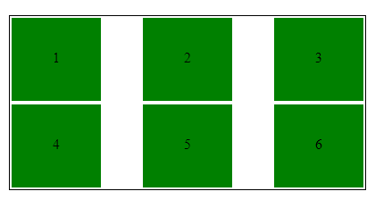Space-around adalah gabung dari beberapa effect di atas. berperilaku : item kanan dan kiri mempunyai padding di sisi kanan dan kirinya begitu juga item yang tengah sehingga terjadi penumpukan pading 2x margin di samping item tengah
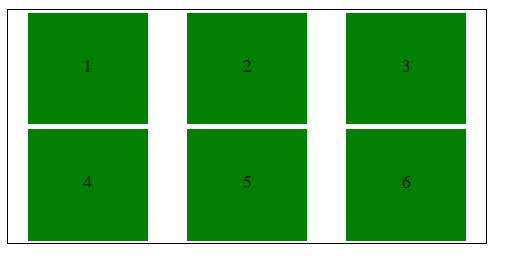berperilaku hampir sama dengan Space-around namun bedanya effek ini tidak terjadi penumpukan pading di item tengah
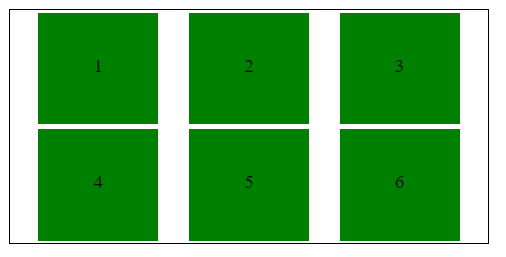align-content bisa di gunakan jika itemnya lebih dari satu baris. dan mempunyai 6 effect
berperilaku : Semua Content berada pada posisi Start di sebelah kiri
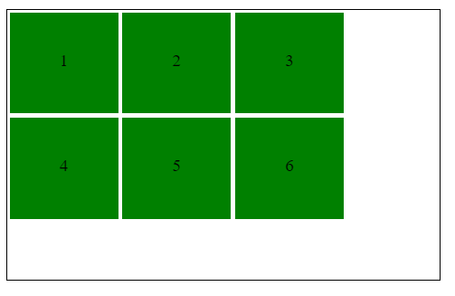berperilaku : Semua Content berada pada posisi end atau akhir
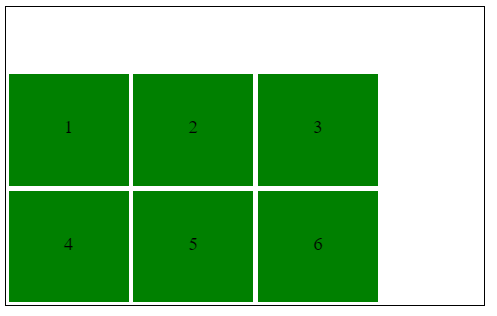berperilaku : Semua Content berada pada posisi tengah
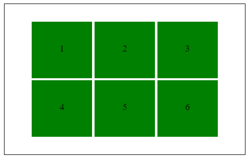berperilaku : Content yang atas dengan bawahya mempunyai padding
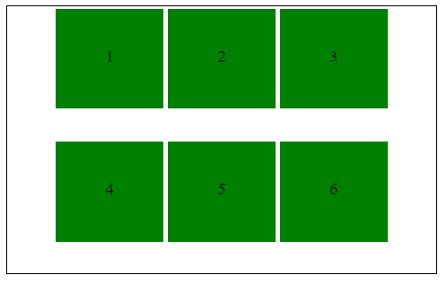berperilaku : setiap item mempunyai pading dan pading yang berada di tengah terjadi penumpukan pading 2x
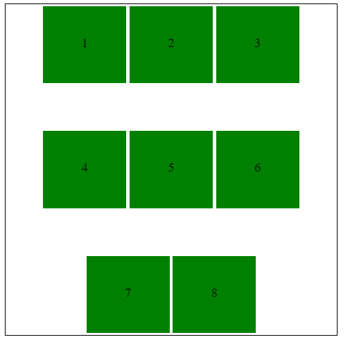berperilaku : setiap item mempunyai padding
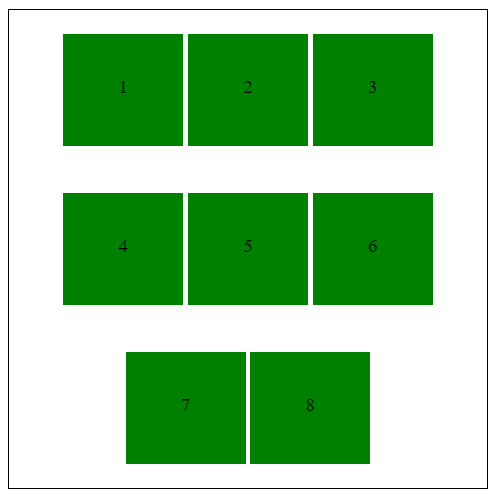